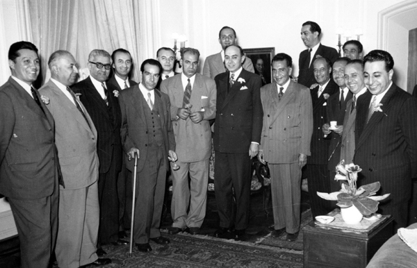
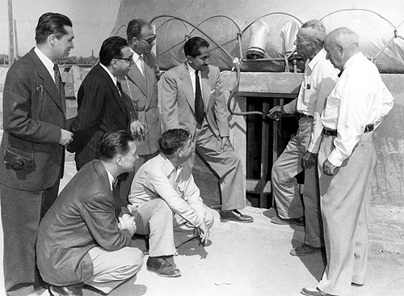

A US Visit
At the hight of the oil dispute between Iran and Britain, the US government tried to mediate. Hossein Makki, the outspoken pro-Mossadiq parliament member was invited to the US for a tour of American oil industry facilities, and informal talks. Given Makki's personal political ambitions, pro-mossadiq faction in Majlis decided to send Asghar Parsa with Makki to the US to provide Americans with geniune pro-Mossadiq views. On their way to the US, Makki and Parsa went to Germany and had an unscheduled meeting with Dr. Hossein Fatemi, Mossadiq's Foreign Minister, who was in that country for medical treatment of the wounds he suffered as result of an assasination effort by the muslim extrimists. 

Visiting the oil industry installations in the US.